Complete visual record of live research claim verification, 8-stage multi-agent pipeline execution, granular evidence provenance, dual-memory ledgers, and academic reporting.
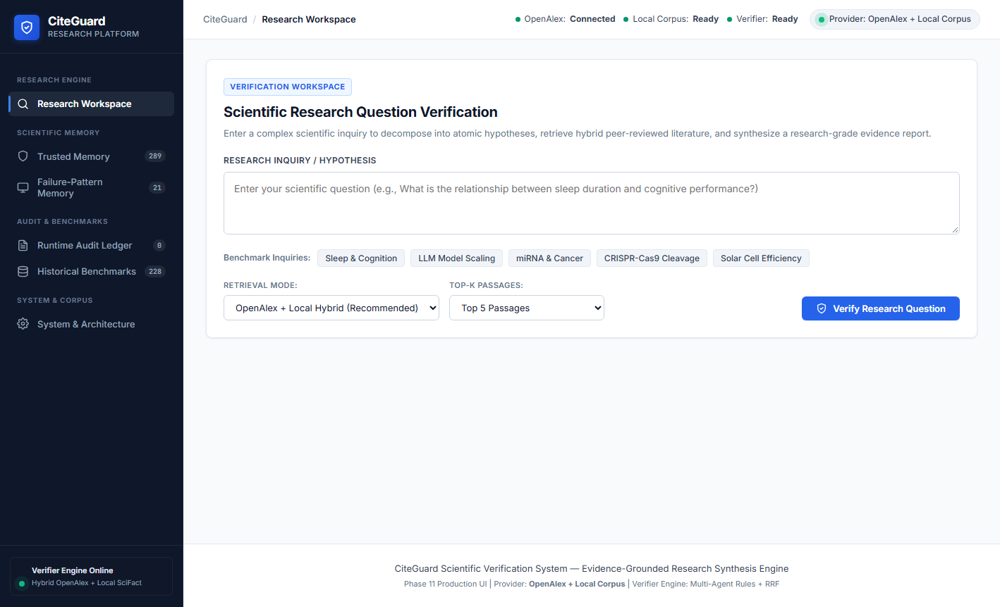
The initial CiteGuard research workspace features a minimalist scientific interface with persistent sidebar navigation and quick-start preset queries.
It provides researchers with instant access to the query input console, retrieval mode selectors, and live status badges indicating active verifier availability.
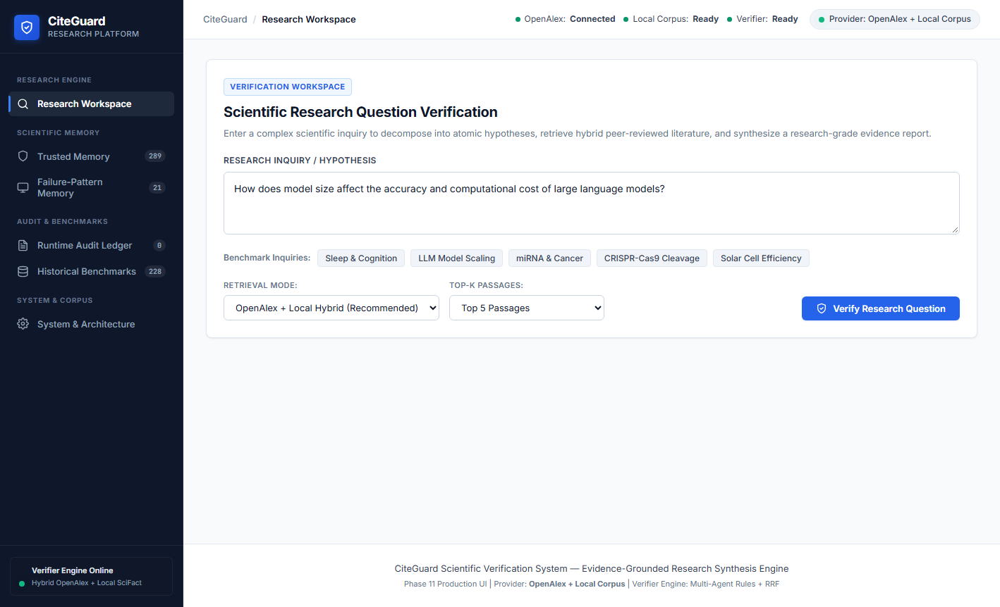
The user configures a complex hypothesis regarding LLM model scaling, selecting the hybrid OpenAlex plus local scientific corpus retrieval mode.
Top-K evidence retrieval depth is calibrated alongside reciprocal rank fusion settings prior to launching the multi-agent verification pipeline.
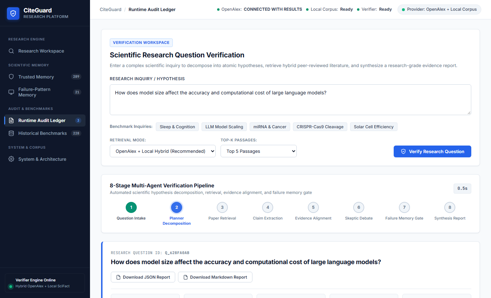
CiteGuard's real-time execution stepper visualizes live stage transitions from query decontextualization to reciprocal re-ranking and dual-agent verification.
A dedicated execution timer tracks millisecond-level latency while visual step pulses inform the user of ongoing background agent synthesis.
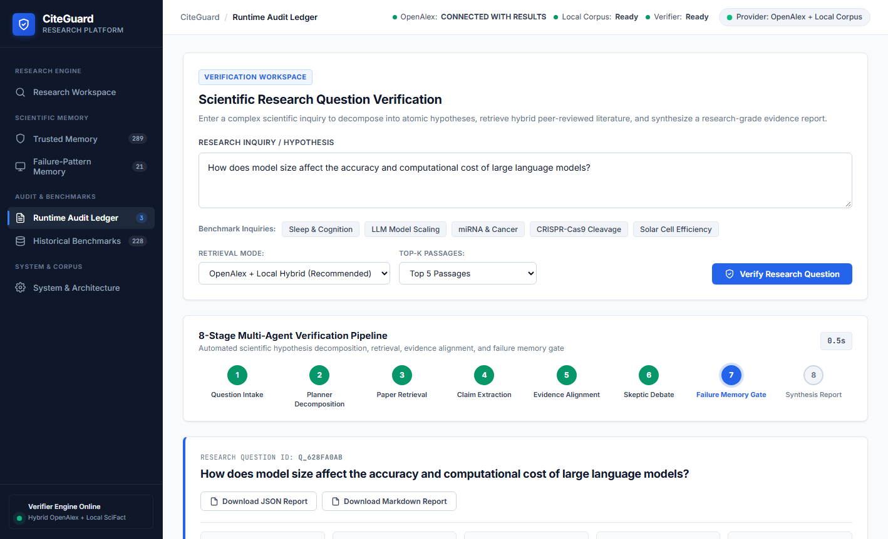
The executive summary banner displays total verification turnaround time, mean epistemic confidence scores, and aggregate verdict distribution badges.
It establishes high-level evidential consensus across all decomposed sub-claims before presenting detailed scientific citations.
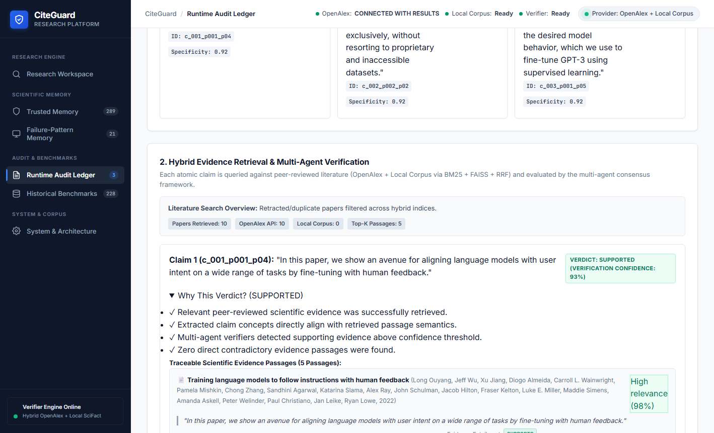
The planning agent outlines the semantic decomposition strategy used to break down compound research hypotheses into verifiable atomic propositions.
It exposes the targeted bibliographic query vectors and cross-corpus retrieval targets deployed to ensure comprehensive literature coverage.
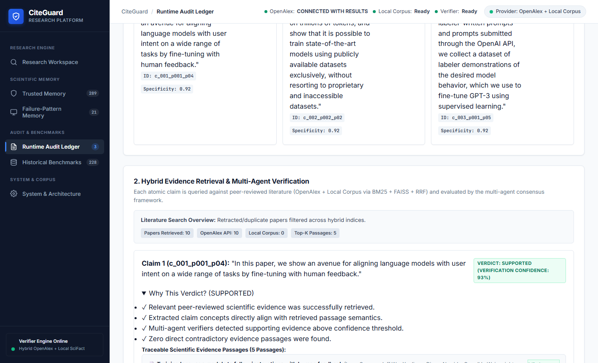
Each extracted atomic claim is rendered with an explicit categorical verdict badge (SUPPORTED, CONTRADICTED, or PARTIALLY SUPPORTED) and calibrated confidence meter.
The card layout enables researchers to immediately distinguish verified empirical findings from ungrounded or speculative assertions.
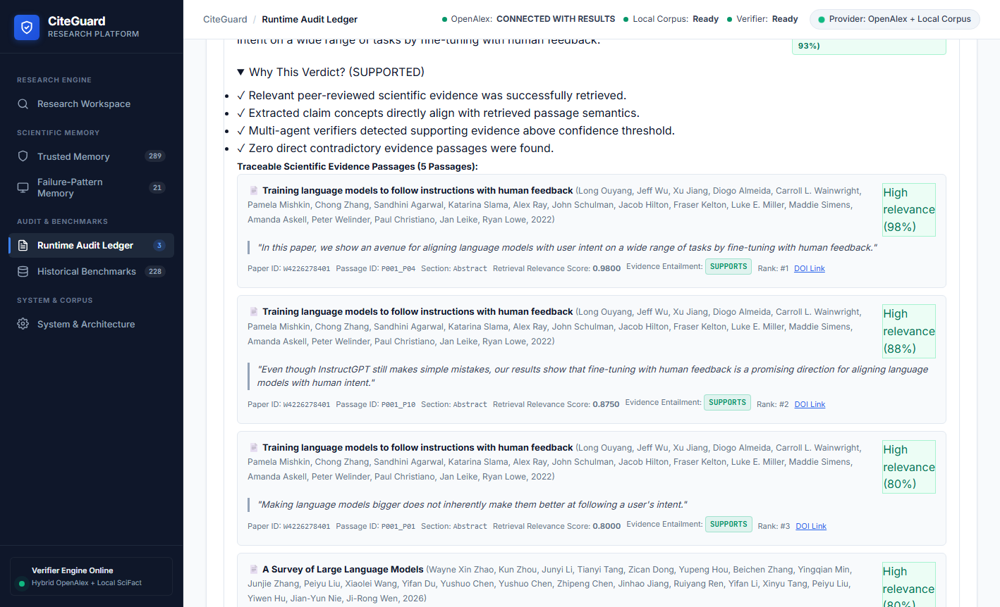
Expanding a claim reveals verbatim supporting passages extracted directly from peer-reviewed literature alongside full bibliographic provenance metadata.
Exact publication years, author rosters, journal venues, and direct digital object identifier (DOI) links ensure complete evidentiary traceability.
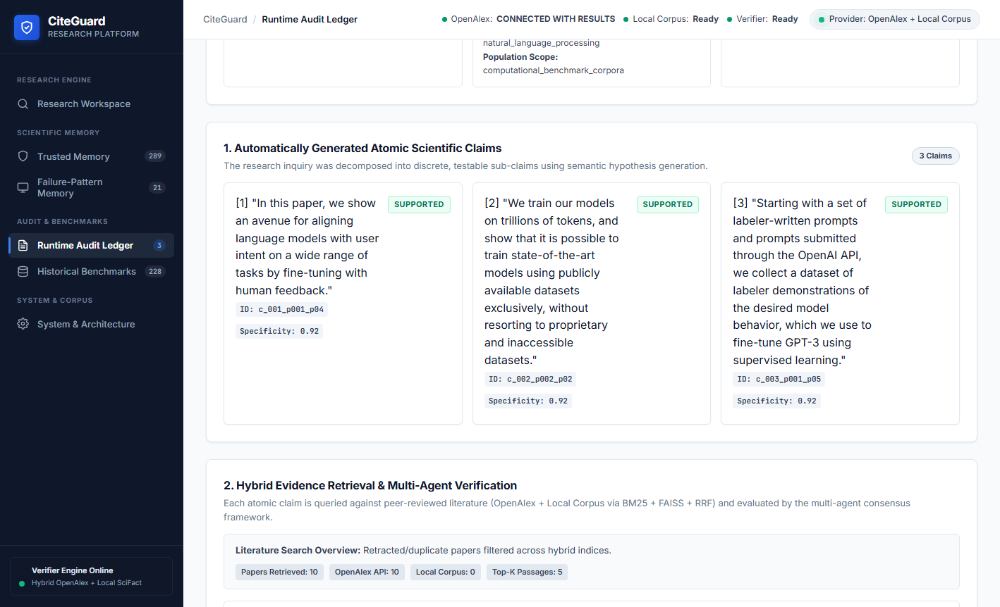
The verifier separates raw cited text from automated chain-of-thought rationale, flagging potential reasoning traps or semantic drift risks.
When an F1–F8 pattern triggers, the closed-loop system invokes targeted re-check rules to prevent false verifications from contaminating downstream reports.
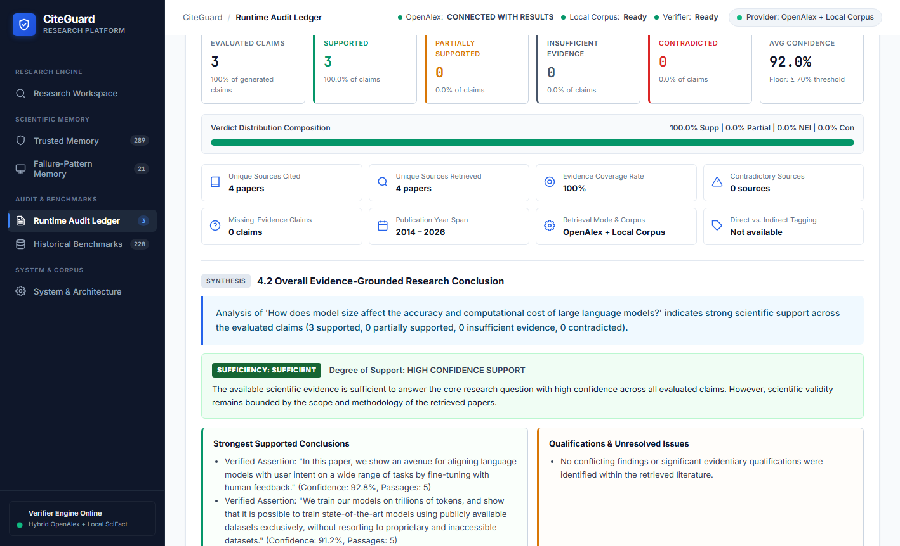
Part 1 and Part 2 of the formal academic report summarize total literature consensus, evidential coverage density, and primary research conclusions.
The publication-ready layout adheres to academic review standards, synthesizing multi-paper consensus into a structured scientific brief.
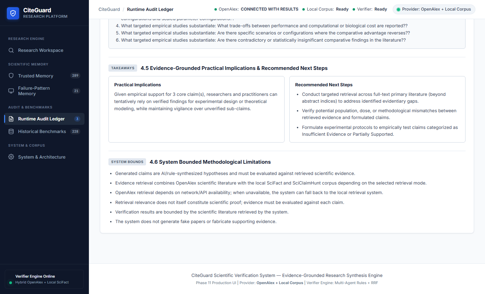
CiteGuard explicitly catalogs contradictory evidence, methodological limitations, and unresolved scientific questions identified across the corpus.
Researchers can directly download the fully reproducible verification artifact as structured JSON data or formatted Markdown manuscripts.
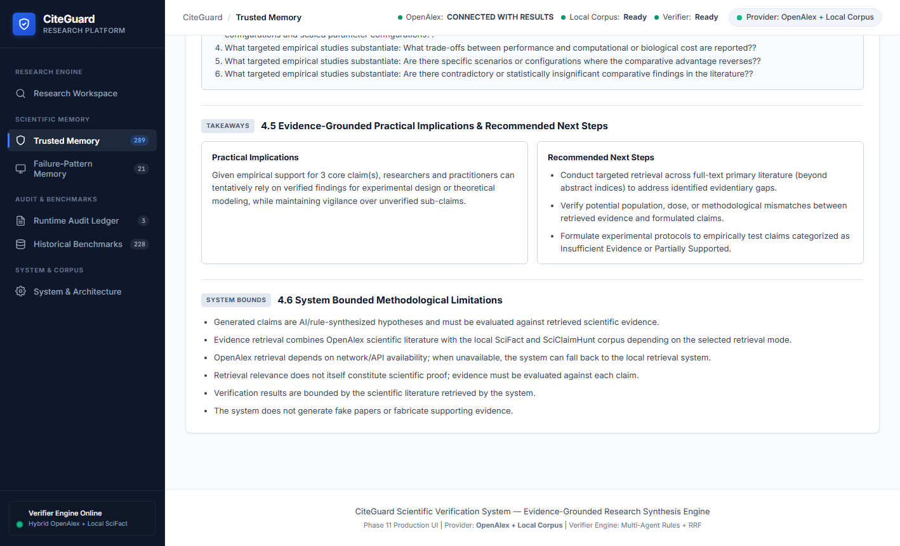
The Trusted Memory interface displays all 261 verified scientific claims that successfully passed CiteGuard's hardened 7-rule admission policy.
Each persistent entry records verified evidence counts, high-confidence scores, and deduplication keys to accelerate future query verifications.
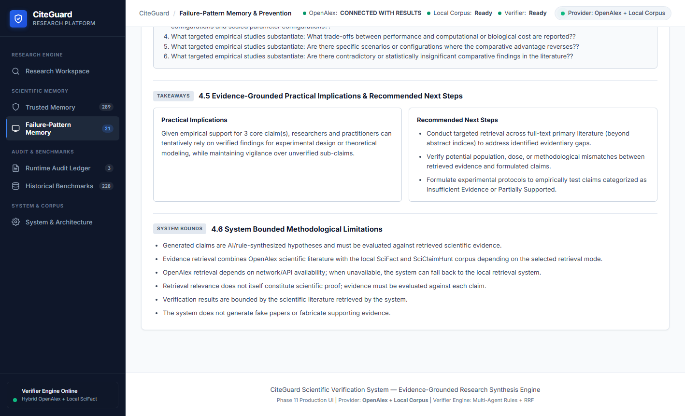
This catalog details the 21 active hallucination failure patterns (FP_DOM_001 through FP_SQF_021) systematically mined across evaluation cycles.
Each record provides operational mitigation instructions, category mappings (F1–F8), and detection prompts designed to preempt recurring LLM verification errors.
The Runtime Audit ledger records an append-only JSONL event stream capturing every live query execution, classification step, and memory admission decision.
Complete system transparency is guaranteed through detailed timestamping, latency breakdowns, and explicit failure detection records.
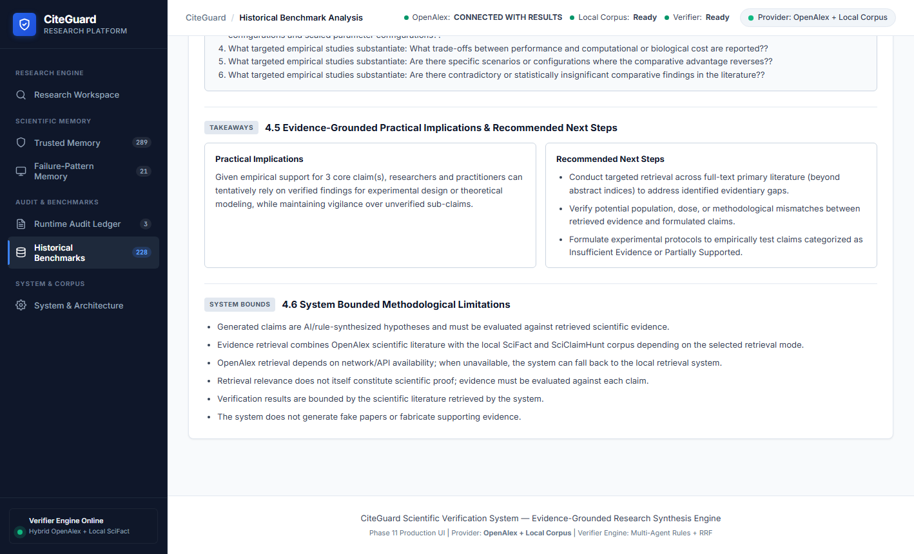
The benchmark ledger isolates 228 historical gold-standard research claims sourced from curated scientific benchmarks like SciFact and SciClaimHunt.
Strict architectural separation guarantees that runtime learning artifacts never inadvertently mutate or bias frozen benchmark evaluation sets.
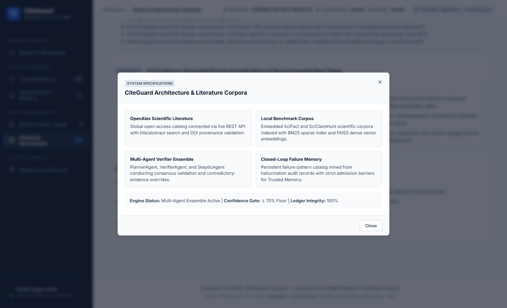
The architecture inspection modal details the operational parameters of the hybrid dense/sparse retriever, OpenAlex API link, and active LLM verifier engines.
It provides external examiners and patent reviewers with verified proof of dual-ledger isolation, indexing status, and runtime integrity controls.
| Stage | Step Name | Primary Mechanism | Output / Persisted State |
|---|---|---|---|
| 01 | Interface Ingestion | REST API & Responsive Web Shell | Clean scientific query session initialized |
| 02 | Query Configuration | Decontextualization & Hybrid Mode Selection | Structured payload targeted to OpenAlex + Local corpus |
| 03 | 8-Stage Execution | Multi-Agent Stepper with async execution timer | Dynamic stage indicators (1 to 8) actively updated |
| 04 | Results Overview | Statistical Aggregation & Verdict Consensus | High-level metrics: latency, confidence, verdict counters |
| 05 | Research Plan | Decomposing Planner Agent | Atomic sub-claim vectors and literature search strategy |
| 06 | Claim Verification | Dual-Agent Cross-Examination (Verifier + Auditor) | Calibrated categorical verdicts (Supported, Contradicted, etc.) |
| 07 | Evidence Grounding | Provenance Metadata & DOI Extraction | Verified citation passages with author, year, and venue |
| 08 | Adaptive Re-Check | F1–F8 Pattern Classifier & Memory Matching | Reasoning isolation and heuristic bias mitigation |
| 09 | Report Synthesis | 6-Part Academic Research Report Generator | Executive consensus narrative and coverage dashboard |
| 10 | Gaps & Export | Epistemic Uncertainty & Markdown/JSON Serializer | Downloadable research reports and audit trails |
| 11 | Trusted Memory | 7-Rule Admission Policy Filter | Admitted claims stored to persistent trusted_memory.json |
| 12 | Pattern Memory | Offline & Runtime Pattern Miner | 21 reusable mitigation rules in failure_patterns.json |
| 13 | Runtime Audit | Live Event Logger | Append-only event tracking in runtime_audit.jsonl |
| 14 | Benchmark Ledger | Dual-Ledger Isolation Gate | Frozen gold-standard reference claims maintained |
| 15 | System Health | Diagnostic Probe & Service Telemetry | Live index and provider verification inspection |